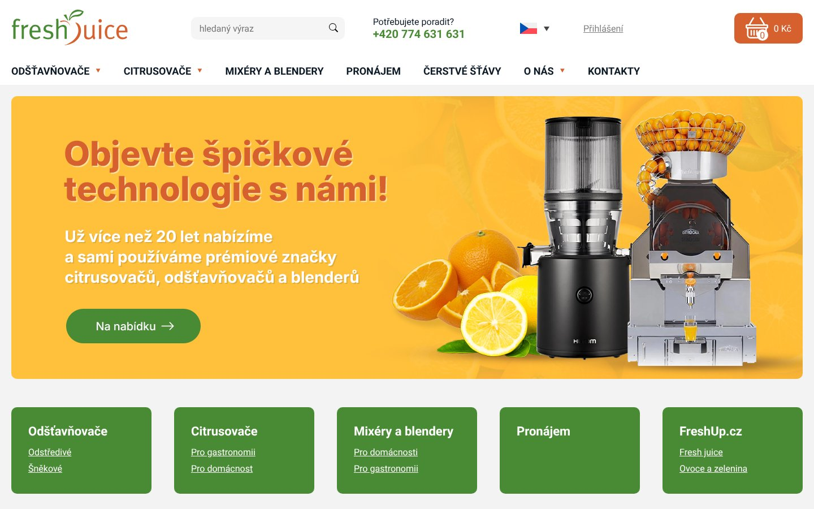
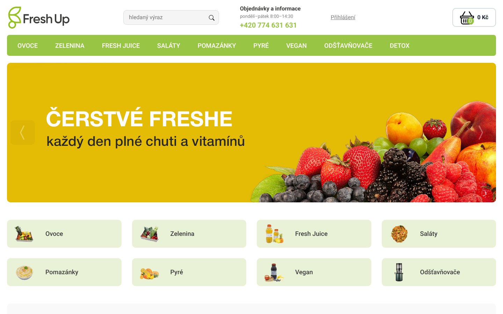
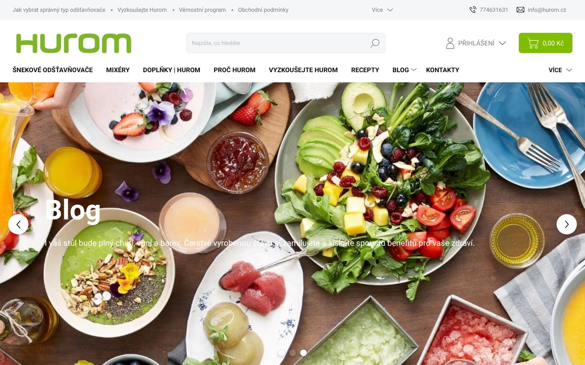

Co udělat
- Zaveďte a viditelně komunikujte práh dopravy zdarma (částku) napříč webem.vysoká prioritaKonkurent komunikuje „doprava zdarma“, ale u vás nemáme změřený práh; jasná částka snižuje nejistotu a zvyšuje konverzi v košíku.podle freshjuice.cz
- Zobrazujte dostupnost a dodací lhůtu přímo u produktů a v košíku (např. „skladem“ / konkrétní termín).vysoká prioritaKonkurent komunikuje „skladem“, zatímco u vás dodací lhůta není změřená; dostupnost je klíčový rozhodovací faktor u dražší techniky.podle freshjuice.cz
- Zviditelněte na klíčových místech webu (hlavička, košík, detail produktu) jasné sdělení o dostupnosti a dodání, pokud je máte k dispozici.vysoká prioritaKonkurent komunikuje „skladem“; bez stejně jasného signálu můžete ztrácet zákazníky, kteří chtějí rychlé doručení.podle freshup.cz
- Rozšiřte platební metody o dobírku, bankovní převod, Apple Pay a Google Pay.vysoká prioritaKonkurent má v platbách jasnou výhodu a vy tím snížíte bariéry dokončení objednávky u různých preferencí zákazníků.podle hurom.cz
- Spusťte jazykovou verzi pro SK a přepínač jazyka umístěte do hlavičky.střední prioritaKonkurent má jazykové verze cs a sk, zatímco u vás jazykové verze nemáme změřené; SK varianta může rozšířit zásah bez změny sortimentu.podle freshjuice.cz
freshjuice.cz
https://freshjuice.cz

Freshjuice.cz se profiluje jako prodejce prémiových odšťavňovačů pro domácí i profesionální použití a v navigaci má jasně rozdělené kategorie (šnekové, odstředivé, citrusovače, mixéry) včetně sekce pronájmu a čerstvých šťáv. Na webu komunikují „doprava zdarma“ a „skladem“, ale u většiny srovnávacích atributů proti vám nemáme kompletní měření, takže nelze férově určit, kdo vede.
| Atribut | Vy | Oni | Verdikt |
|---|
| Doprava zdarma od | — | 5000 Kč | nezměřeno |
| Dodací lhůta | — | skladem | nezměřeno |
| Platební metody | karta | — | nezměřeno |
| Telefon v hlavičce | ne | ne | shoda |
| Sociální důkaz | recenze | — | nezměřeno |
| Vrácení do (dní) | — | — | nezměřeno |
| Záruka (měsíců) | — | — | nezměřeno |
| Chat na webu | ne | ne | shoda |
| Newsletter | ne | ne | shoda |
| Jazykové verze | — | cs, sk | nezměřeno |
Cenové pásmo — vy: 490–1990 Kč (medián 990, 3 cen) · oni: nezměřeno. Popisný údaj, neporovnává se jako verdikt.
Od minulého měření (2026-09-12T19:21:46.443Z) se nic podstatného nezměnilo.
Co s tím
- U konkurenta je vidět důraz na prémiové positioning a rychlé doručení („skladem“) a současně na snížení bariér nákupu („doprava zdarma“). Proto si nastavte a konzistentně komunikujte konkrétní pravidla dopravy zdarma a dostupnosti, aby zákazník nemusel nic dohledávat. Vzhledem k tomu, že konkurent nabízí i SK jazyk, dává smysl dorovnat tuto výhodu, pokud cílíte i mimo ČR. U ostatních oblastí (platby, recenze, vrácení, záruka) nemáme u konkurenta nebo u vás dost dat, takže je teď nelze porovnat.
freshup.cz
https://freshup.cz

Freshup.cz se profiluje jako e‑shop se zaměřením na „skutečně čerstvé“ a „skutečně zdravé“ produkty, podle navigace zejména ovoce, fresh juice, pomazánky, pyré, saláty, vegan a zeleninu (včetně sekce DETOX). Oproti vám se v měřených datech neprojevuje jasná výhoda v dopravě, dodání ani garancích (většina atributů je nelze určit), ale na webu explicitně komunikuje sliby „zdarma“ a „skladem“.
| Atribut | Vy | Oni | Verdikt |
|---|
| Doprava zdarma od | — | — | nezměřeno |
| Dodací lhůta | — | skladem | nezměřeno |
| Platební metody | karta | prevod | shoda |
| Telefon v hlavičce | ne | ne | shoda |
| Sociální důkaz | recenze | — | nezměřeno |
| Vrácení do (dní) | — | — | nezměřeno |
| Záruka (měsíců) | — | — | nezměřeno |
| Chat na webu | ne | ne | shoda |
| Newsletter | ne | ne | shoda |
| Jazykové verze | — | — | nezměřeno |
Cenové pásmo — vy: 490–1990 Kč (medián 990, 3 cen) · oni: 150–990 Kč (medián 570, 2 cen). Popisný údaj, neporovnává se jako verdikt.
První měření — příště se tenhle stav porovná a uvidíte, co se změnilo.
Co s tím
- V tomto prvním měření je u freshup.cz řada klíčových atributů (doprava zdarma od, dodací lhůta, vrácení, záruka, jazykové verze) neznámá, takže nelze férově vyhodnotit, kde reálně vedou. Jediné zřetelné signály na webu jsou „zdarma“ a „skladem“ a široká navigace kategorií. Zaměřte se proto na co nejviditelnější komunikaci dostupnosti/dodání a na maximální využití vašich recenzí, protože to jsou oblasti, kde můžete mít rychlý dopad bez potřeby dalších dat.
hurom.cz
https://hurom.cz

Hurom.cz se profiluje jako specialista na odšťavňovače a staví komunikaci na jasných slibech „doprava zdarma“, „vždy skladem“ a „odeslání do 24 hodin“. Oproti vám má výrazně širší nabídku platebních metod a silnější sociální důkaz (více typů hodnocení včetně Heureky). Navíc sbírá kontakty přes newsletter, zatímco vy ho nemáte.
| Atribut | Vy | Oni | Verdikt |
|---|
| Doprava zdarma od | — | — | nezměřeno |
| Dodací lhůta | — | skladem | nezměřeno |
| Platební metody | karta | karta, dobirka, prevod, Apple Pay, Google Pay, Twisto, Skip Pay, splatky | ztrácíte |
| Telefon v hlavičce | ne | ne | shoda |
| Sociální důkaz | recenze | recenze, hodnoceni, hvezdicky, Heureka | ztrácíte |
| Vrácení do (dní) | — | — | nezměřeno |
| Záruka (měsíců) | — | — | nezměřeno |
| Chat na webu | ne | ne | shoda |
| Newsletter | ne | ano | ztrácíte |
| Jazykové verze | — | — | nezměřeno |
Cenové pásmo — vy: 490–1990 Kč (medián 990, 3 cen) · oni: 80–500000 Kč (medián 2000, 26 cen). Popisný údaj, neporovnává se jako verdikt.
Kde ztrácíte
- Platební metody: oni karta, dobirka, prevod, Apple Pay, Google Pay, Twisto, Skip Pay, splatky, vy karta
- Sociální důkaz: oni recenze, hodnoceni, hvezdicky, Heureka, vy recenze
- Newsletter: oni ano, vy ne
První měření — příště se tenhle stav porovná a uvidíte, co se změnilo.
Co s tím
- V této vlně měření je největší prokazatelná mezera v platbách a v šíři sociálního důkazu. U dopravy zdarma, dodacích lhůt, vrácení a záruky nemáme u vás ani u konkurenta kompletní srovnatelná data, takže zde nelze dělat závěry. Zaměřte se na rychlé dorovnání platebních možností a na posílení důvěryhodnosti (např. viditelné hvězdičky a externí zdroj typu Heureka), a současně začněte budovat vlastní databázi přes newsletter.